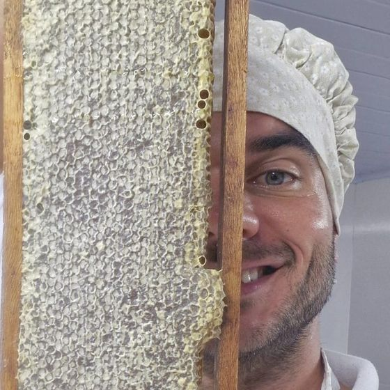
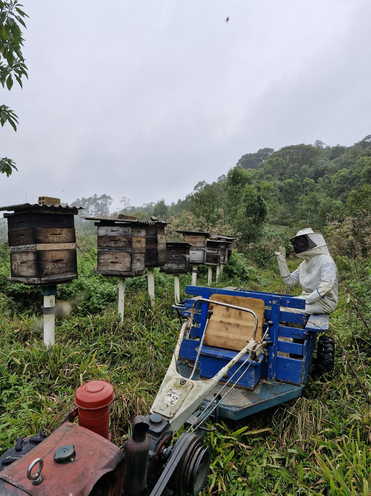
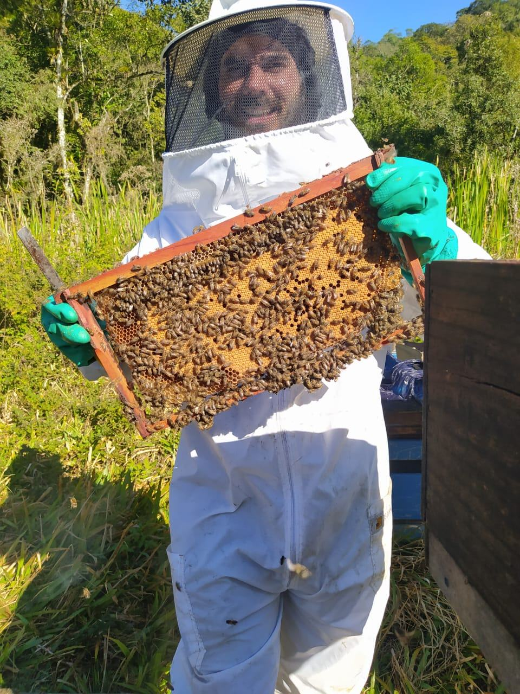
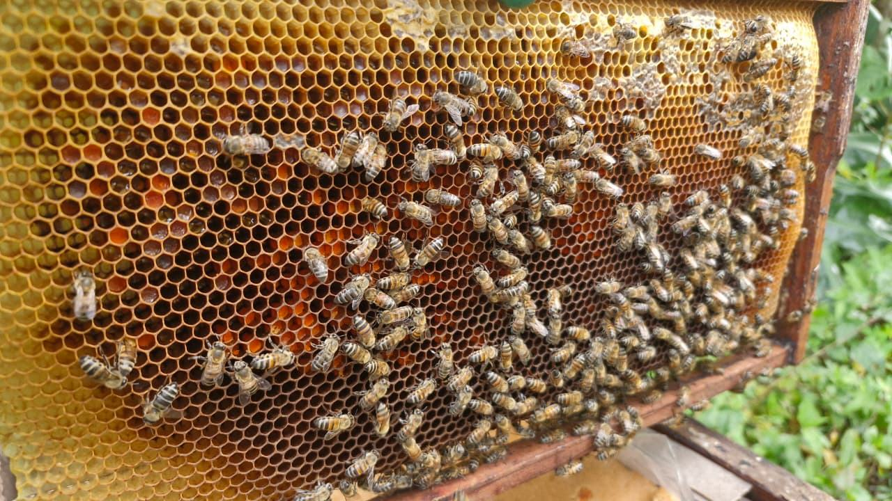
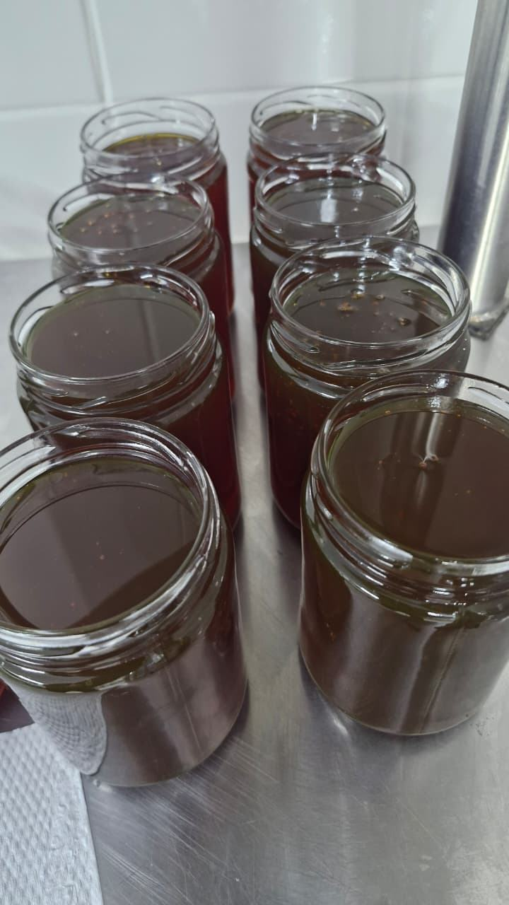
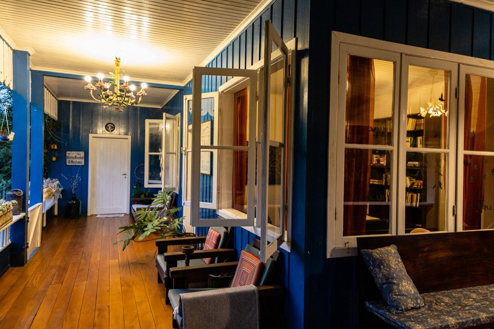
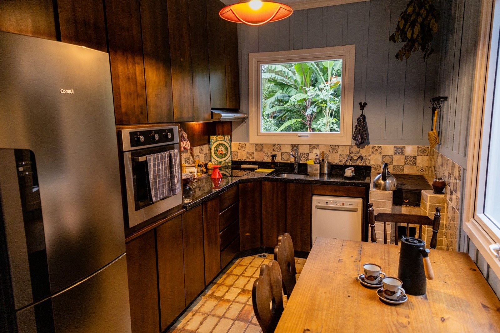
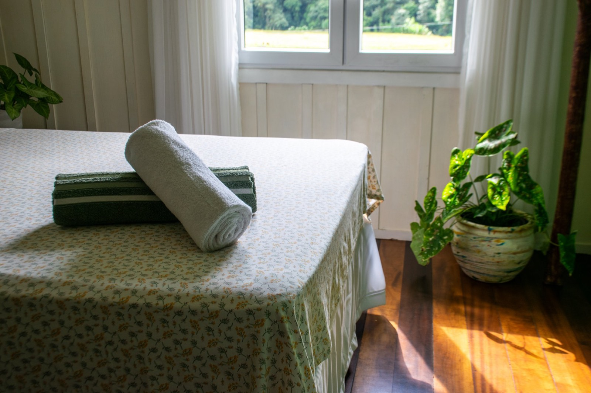

Promovendo conexão com a natureza
Mel, própolis e experiências na Mata Atlântica

Há mais de uma década, o agrônomo Alexandre Reichel cuida destes 14 hectares de Mata Atlântica — regenerando floresta, criando abelhas e abrindo a porteira para quem quer reconectar.
Nossa históriaLeve para casa
Ver loja🌿 Sazonais sob consulta: azeite de pimenta, cúrcuma, geleias
Do apiário ao pote
O mel da Curi nasce de uma floresta viva — uma área de Mata Atlântica que ajudamos a recuperar. Cada safra é única.

Colmeias entre as floradas nativas da mata recuperada.

Só os quadros maduros, respeitando o ciclo das abelhas.

Filtragem simples: pólen e própolis ficam no mel.

Cada pote com a safra e o lote. Selo Arte.
Tangará-dançarino
Uma das 220+ espécies registradas na propriedade. Saiba quando e como observar.
Observação de avesO som da cidade deu lugar ao canto dos pássaros. Voltamos diferentes.
— hóspede no Airbnb · ★★★★★



Receba notícias da propriedade
Safras, aves do mês e janelas de hospedagem — direto no seu WhatsApp ou no Instagram.